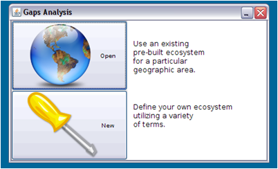
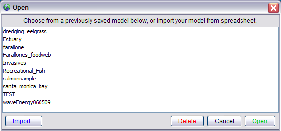

Getting Started
Click the Gap Analysis icon in the menu bar to open the Gap Analysis module. To build your own ecosystem model by entering terms and phrases by hand, select “New” from the Gaps Analysis screen.

To open an existing ecosystem model, select Open.
Open
There are two choices for using previously saved models:

To open an existing ecosystem model in the program, select a file from the list by highlighting it (single click), then pushing the Open button.